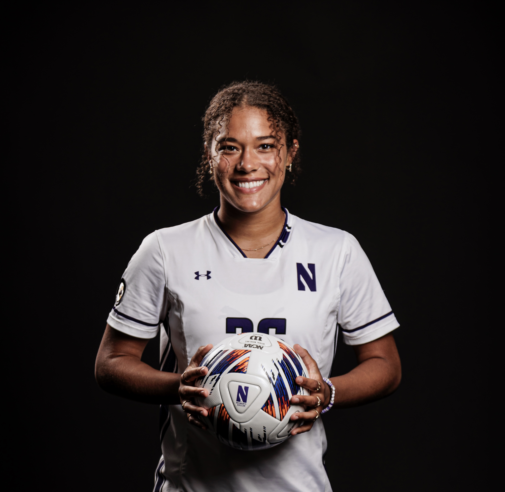

Brooke Miller
About Me
Welcome! My name is Brooke Miller and I grew up in Naperville, Illinois. Born to a Chicago suburb but a city girl at heart... I'm a student athlete at Northwestern, and am currently in my junior year. I study at the Medill School of Journalism and couldn't see myself graduating with any other degree. I'm interested in following a career in broadcast journalism, and have developed skiils/experience for both in front of and behind the camera. I film and edit videos for fun when I'm not practicing or doing homework. I love to podcast, and as you may see, I could probably talk all day long. I've been into podcasting since highschool, and can one day see myself having my very own.
Contact her via email @brookemiller2026@u.northwestern.edu